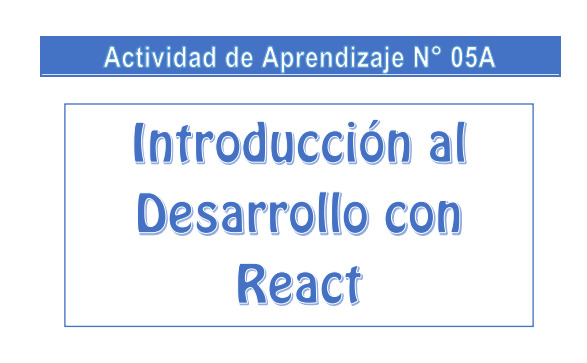

Cuaderno

SEMANA 02: HTML Y CSS

Estudiante de Ingeniería de Sistemas de la Universidad Nacional del Centro del Perú. Me apasiona el análisis y ciencia de datos. Explora mi portafolio para conocer más sobre mis proyectos y reflexiones.
Soy estudiante de Ingeniería de Sistemas en la Universidad Nacional del Centro del Perú, con una profunda pasión por el análisis y la ciencia de datos. A lo largo de mi formación académica, he desarrollado un interés por la resolución de problemas complejos mediante el uso de herramientas tecnológicas y técnicas de análisis avanzadas. Te invito a explorar mi portafolio, donde podrás conocer más sobre los proyectos que he realizado y las reflexiones que guían mi camino en esta fascinante disciplina.

Fundamentos de las tecnologías web.
Mediante las clases y herramientas de internet.

HTML Y CSS
Mediante clases y herramientas en linea.

Componenetes, jsx y estilos en react.
Con videos tutoriales de Youtube y heramientas online.

Desarrollo frontend con ecmascript.
Herramientas de Internet
Desarrollo con React.
Clases del docente y videos de Youtube.

Componentes, jsx y estilos en React
Practicas dirigidas con el docente.